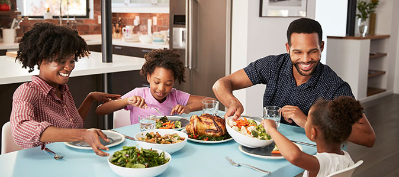
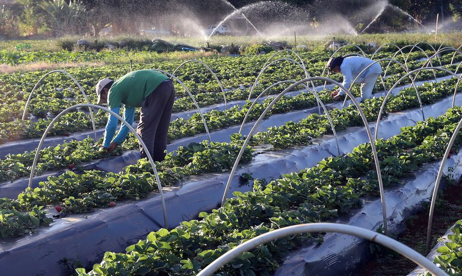

Objetivo de Desenvolvimento Sustentável (ODS 2)
Fome zero e agricultura sustentável
Possui o objetivo de erradicar a fome, alcançar a segurança alimentar, melhorar a nutrição e promover a agricultura sustentável até 2030.
1. Até 2030, acabar com a fome e garantir o acesso de todas as pessoas,
em particular os pobres e pessoas em situações vulneráveis, incluindo crianças, a alimentos seguros, nutritivos e suficientes durante todo o ano.
2. Até 2030, acabar com todas as formas de má-nutrição,
incluindo atingir, até 2025, as metas acordadas internacionalmente sobre nanismo e caquexia em crianças menores de cinco anos de idade, e atender às necessidades nutricionais dos adolescentes, mulheres grávidas e lactantes e pessoas idosas.
3. Até 2030, dobrar a produtividade agrícola e a renda dos pequenos produtores de alimentos,
particularmente das mulheres, povos indígenas, agricultores familiares, pastores e pescadores, inclusive por meio de acesso seguro e igual à terra, outros recursos produtivos e insumos, conhecimento, serviços financeiros, mercados e oportunidades de agregação de valor e de emprego não agrícola.
4. Até 2030, garantir sistemas sustentáveis de produção de alimentos e implementar práticas agrícolas resilientes,
que aumentem a produtividade e a produção, que ajudem a manter os ecossistemas, que fortaleçam a capacidade de adaptação às mudanças climáticas, às condições meteorológicas extremas, secas, inundações e outros desastres, e que melhorem progressivamente a qualidade da terra e do solo.
5. Até 2030, manter a diversidade genética de sementes, plantas cultivadas, animais de criação e domesticados e suas respectivas espécies selvagens,
inclusive por meio de bancos de sementes e plantas diversificados e bem geridos em nível nacional, regional e internacional, e garantir o acesso e a repartição justa e equitativa dos benefícios decorrentes da utilização dos recursos genéticos e conhecimentos tradicionais associados, como acordado internacionalmente.
Todos nós temos um papel importante a desempenhar na luta contra a fome. Ao se informar sobre as estratégias e ações necessárias para alcançar o ODS 2, você estará contribuindo para um mundo mais justo e sustentável.
Como parte da campanha #FomeZero, a FAO (Food and Agriculture Organization) preparou uma lista com quatro ações que podem ajudar a alcançar um mundo onde todos tenham o que comer. Leia abaixo as dicas da agência:
Não desperdice comida
Se você tiver sobras, congele elas para mais tarde ou use elas como ingrediente para fazer uma nova refeição. Quando comer num restaurante, peça uma meia porção se não estiver com muita fome, ou peça para levar o que sobrou para casa.
Produza mais, com menos
Até 2050, a estimativa é que o número de habitantes no planeta chegue a 9 bilhões de pessoas. Por isso, agricultores precisam encontrar novas formas e maneiras mais eficientes de produzir alimentos, além de diversificar as plantações. Uma abordagem integrada de agricultura pode ajudar os produtores a aumentar as colheitas, e assim, os lucros. Além disso, também pode contribuir para melhorar a qualidade da terra.
Adote uma dieta mais saudável e sustentável
Encontrar tempo para preparar refeições nutritivas pode ser um desafio numa vida com o ritmo rápido, principalmente quando não se sabe como fazer isso. Refeições nutritivas não precisam ser elaboradas. Na verdade, elas podem ser feitas de uma maneira rápida, fácil, e utilizando poucos ingredientes. Compartilhe suas receitas nutritivas com sua família, amigos, colegas e online. Siga chefs de cozinha e bloggers online para aprender novas receitas ou converse com o seu fornecedor local para aprender como eles preparam o que produzem em casa.
Defenda a #FomeZero
Todos têm um papel na construção de um mundo com #FomeZero, mas países, instituições e pessoas precisam trabalhar em conjunto para alcançar este objetivo. A FAO estimula a estabelecer parcerias #FomeZero, compartilhar conhecimento e recursos, desenvolver estratégias e descobrir novas oportunidades para contribuir no combate à fome.
.gif)
Parabéns! :)
Parabéns! Agora você se tornou um verdadeiro soldado nessa luta mundial. Seu compromisso em buscar conhecimento e se engajar nas metas do ODS 2 mostra sua dedicação em combater a fome e promover a segurança alimentar. Sua participação é essencial para alcançarmos um futuro sustentável e livre da fome.